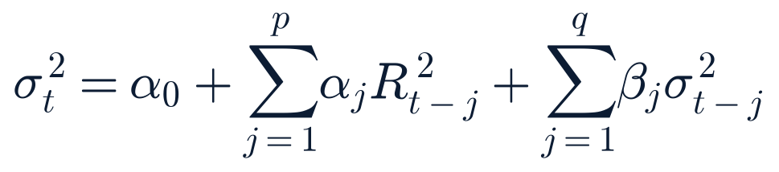

Section 2 · the five-minute versionFive-Minute Week-Ahead Brief
The world The weekend sharpened, rather than resolved, the week's central geopolitical thread. A third ADNOC tanker was struck in the Strait of Hormuz Friday night into Saturday; President Trump told a rally he would “pretty soon” declare the Strait “a territory of the United States,” and Iran's Deputy Foreign Minister Kazem Gharibabadi publicly rebuffed the claim on X, saying the Strait “cannot be seized by tweet, nor by aircraft carrier.” Shipping traffic through the Strait has fallen to roughly 17% of its pre-conflict average. Separately, Jared Kushner, Tony Blair and Nickolay Mladenov landed in Israel Sunday as planned, the first concrete high-level US diplomatic push on Gaza disarmament since Netanyahu's Aug 9 rejection — their Cairo leg and any readout are still pending as this report goes to press. Ukraine launched its largest drone attack of the year overnight (Russia claims 822 intercepted; Moscow's mayor reported roughly 600 headed toward the capital), and Russia retaliated with strikes on Kryvyi Rih, Sumy and Kyiv. Colombia's earthquake toll climbed again to at least 294 dead, and the DRC Ebola outbreak's confirmed count rose to 4,665 cases / 2,184 deaths, with a second WHO Emergency Committee meeting on the outbreak's PHEIC status scheduled for Tuesday Aug 18.
Markets US equities enter the week having given back only a sliver of a strong two-week run: the S&P 500 closed Friday at 7,785.76, down a modest 0.17% from Thursday's session as July retail sales (−0.6% m/m, sharpest since May 2025) and August consumer sentiment (51.0 vs. 54.5 expected) both missed estimates — the week's dominant macro surprise, per Saturday's Weekly Review. That miss did not visibly rattle credit or volatility: the VIX complex eased through the week (VIX 15.46 Mon → 14.25 Fri; VIX9D 10.61; VIX3M 18.46, ordinary contango throughout) and high-yield spreads held flat near 2.71%. The 10-year Treasury yield sits at 4.68% (curve date Aug 14), with 2s10s at +51bp. Gold trades near $4,437, WTI crude $82.40, and Bitcoin $63,015 (roughly flat over 24 hours). This week's single largest scheduled equity-market catalyst is the SpaceX (SPCX) Aug 20 employee-share unlock (~319–320M shares, ~$42B, about 3.4x average daily volume) landing the same week as a marquee big-box retail earnings block (Home Depot Tue, Lowe's/Target Wed, Walmart Thu) that will be read directly against Friday's soft consumer data. Wednesday also brings the FOMC's July meeting minutes.
Central theme A market that shrugged off a real consumer-spending miss heads into a week where its two biggest tests — big-box retail earnings and the SpaceX unlock — will show whether that calm reflects genuine resilience or simply a lack of fresh catalysts, against a geopolitical backdrop (Hormuz, Gaza) that got materially louder over the weekend without a matching increase in oil or volatility pricing.
Most important new development Iran's on-the-record public rejection of Trump's Hormuz “US territory” claim, delivered the same 48 hours as a third ADNOC vessel strike — the sharpest rhetorical escalation this report has tracked in the Hormuz thread since strikes paused in late July.
Most important risk A fourth Hormuz incident, a confirmed casualty event, or an explicit US response to Iran's rebuff would test whether oil and equities can keep pricing this conflict as background risk; none of the past four incidents has yet moved WTI more than routine day-to-day noise.
Most important positive development Diplomatic engagement resumed at the highest level tracked this cycle on Gaza: Kushner, Blair and Mladenov's trip is a concrete step past five weeks of stalemate, even though no outcome is confirmed yet.
Key unknown Whether Friday's retail-sales/sentiment miss is the start of a genuine consumer-demand slowdown or a one-off — this week's Home Depot/Lowe's/Target/Walmart earnings block is the first hard read since the data printed.
Deserves attention this week
Thu Aug 20 — SpaceX's ~$42B employee-share unlock, this week's single largest scheduled equity catalyst; two open forecasts and one new one resolve around this date.
Tue–Thu — Home Depot, Lowe's, Target and Walmart earnings, the first hard read on consumer demand since Friday's retail-sales miss.
Ongoing — Strait of Hormuz trajectory after Iran's public rebuff of Trump's “US territory” claim and a third ADNOC tanker strike.
Sun–Mon — outcome of the Kushner/Blair/Mladenov Israel-then-Cairo Gaza mission, the first concrete US diplomatic push since Netanyahu's Aug 9 rejection.
Tue Aug 18 — WHO's second IHR Emergency Committee meeting on the DRC Ebola PHEIC, now the fastest-growing outbreak on record.
Section 3Top Themes This Week
Theme 1 — Hormuz rhetoric hardens faster than the on-the-water response.
A third ADNOC tanker strike in 48 hours, a presidential claim to make the Strait “US territory,” and an unusually direct Iranian rebuff on social media all landed within one weekend — yet oil, equities and the VIX complex show no sign of pricing imminent escalation. That gap is this week's central Middle East risk to watch.
Theme 2 — A consumer-demand question the market hasn't priced yet.
Friday's retail-sales/sentiment miss barely dented equities, but this week's Home Depot/Lowe's/Target/Walmart earnings block is the first company-level test of whether that data point is a real inflection or noise — and it lands the same week Home Depot's CEO remains on medical leave.
Theme 3 — SpaceX's unlock is this week's single largest idiosyncratic risk.
At roughly 3.4x average daily volume and against a backdrop of Musk's newly disclosed ~$900B stake, the Aug 20 unlock carries three separate open forecasts from this report and is the clearest event-risk date on the calendar.
Theme 4 — Diplomatic tracks reopen on Gaza without a resolved sequencing dispute.
The Kushner/Blair/Mladenov trip is genuine forward motion after five weeks of stalemate, but the underlying disagreement (Israel wants disarmament before withdrawal; Hamas wants the reverse) is unchanged — a joint statement in either direction this week would be the first real signal since Netanyahu's Aug 9 rejection.
Theme 5 — A data-light week leans on Wednesday's FOMC minutes and unresolved cyber/legal threads.
With no Critical-tier econ release and no FOMC meeting until September, the week's macro signal comes mainly from the July FOMC minutes (Wed) and from whether two pending items — the VMware CVE-2026-59310 KEV listing and the SCOTUS mail-ballot stay application — finally resolve inside their respective windows.
Section 4Day-by-Day Calendar
All times ET. Importance classified Critical/High/Medium/Low with reason in each row. No NYSE holiday or early close this week (confirmed against data/nyse-holidays.json; next holiday is Labor Day, Sep 7).
Monday, August 17
Time ET
Event
Importance
Notes
—
13-Week / 26-Week Treasury Bill auctions
Low
Routine bill supply
—
Congress: Senate pro forma session only; House in district work period (next votes ~Aug 31)
Low
No substantive floor business expected; NDAA FY2027 stays blocked
Overnight
Long March 2C — undisclosed payload (China)
Low
Routine Chinese state launch
—
Reddit (RDDT) enters the S&P 500 (effective before Tue open)
Medium
Index-fund rebalancing flows expected Mon/Tue; not a watchlist name but a market-structure catalyst worth noting
Tuesday, August 18
Time ET
Event
Importance
Notes
06:00
Home Depot (HD) Q2 FY2026 earnings
High
Reports the same week its CEO remains on medical leave; consensus EPS ~$4.71–4.88. See Section 9.
Disputed date Launch Library 2 lists tonight; other trackers show conflicting dates (some as early as Aug 10–11, one as late as Aug 31). Treat as expected this window, date unconfirmed.
—
WHO IHR Emergency Committee, second meeting on DRC Ebola PHEIC
High
Follow-up to the May 19 meeting that declared the PHEIC; see Section 12
Wednesday, August 19
Time ET
Event
Importance
Notes
06:00
Lowe's (LOW) and Target (TGT) Q2 earnings
High
Second day of the big-box retail block; consensus LOW EPS ~$4.22–4.29, TGT ~$2.25–2.31. See Section 9.
—
17-Week Treasury Bill auction
Low
Routine bill supply
13:00
20-Year Bond auction
Medium
Monthly refunding cycle; long-end demand read after the 10Y's Aug 14 close near 4.68%
14:00
FOMC Minutes, July 28–29 meeting
High
The week's main Fed-policy data point; see Section 8
$100 bond due
Mail-ballot EO litigation: DOJ's $100 bond deadline at the 1st Circuit
High
See Section 5; SCOTUS stay application still pending
Thursday, August 20
Time ET
Event
Importance
Notes
07:00
Walmart (WMT) Q2 FY2027 earnings
High
Closes the big-box retail block; consensus EPS ~$0.73–0.75. See Section 9.
29-Year 6-Month TIPS reopening; 4-Week / 8-Week Treasury Bill auctions
Low
Routine supply
Friday, August 21
Time ET
Event
Importance
Notes
10:00
State Employment and Unemployment (Monthly), July 2026
Low
State-level detail on the national jobs report; limited standalone sensitivity
—
Falcon 9 — Starlink Group 15-20 (into Saturday)
Low
Routine Starlink deployment
Bridge to the following week: Long March 5 — Chang'e 7 lunar mission is listed “To Be Confirmed” for ~Aug 24, a live grounding-risk question given the shared YF-100 engine architecture with the failed Aug 10 Long March 7A (see Section 13). Fed Chair Warsh's first Jackson Hole keynote as Chair falls Aug 27–29, just outside this window.
Section 5US Politics Outlook
DevelopingConfirmed — multiple sources
Mail-ballot executive order: still no Supreme Court ruling; a new, separate SCOTUS emergency application over the White House ballroom project surfaced Friday
DOJ supplemental brief filed Aug 12 · Ballroom application filed Aug 14 · Last checked 10:05 ET Aug 16
What happened
No Supreme Court ruling or order has issued on the mail-ballot case as of Sunday morning; DOJ's supplemental brief (filed ~Aug 12) continues to urge the Court to “act promptly,” and a $100 bond set by the 1st Circuit is due Tuesday Aug 18. Separately — a new, legally distinct matter — the administration asked the Supreme Court Friday Aug 14 to let the ~$400M White House East Wing ballroom project resume construction during appeal, one week after a D.C. Circuit panel (2-1) ordered a halt, siding with the National Trust for Historic Preservation. The panel majority wrote that “whether or not a massive ballroom should be constructed is for Congress to decide.”
What is confirmed
Both the mail-ballot case's pending status and the ballroom emergency application (SCOTUSblog, CNBC, PBS, ABC, NBC, The Hill — Confirmed-multiple). Underground ballroom work (bunkers, medical facilities) may continue under the district court's order; only aboveground construction is halted.
What remains uncertain
Whether either SCOTUS matter resolves this week; both are on the emergency/“shadow docket,” which can move at any time without advance notice.
Why it matters
Two separate constitutional/executive-authority disputes are now pending before the Court simultaneously, both plausible sources of a genuinely new development this week.
What happens next
Watch for any SCOTUS order on either matter; the $100 bond deadline (Tue Aug 18) is a concrete date to check on the mail-ballot thread.
Sources: SCOTUSblog, Votebeat, American Greatness, CNBC, PBS NewsHour, ABC News, NBC News, The Hill.
Fed Governor Lisa Cook removal fight: no new court filing surfaced over the weekend. Cook's attorneys' letter to the Attorney General calling the mortgage-fraud allegations “baseless” remains her most recent formal response; her 21-day response window runs to roughly Aug 26. Confirmed-multiple, unchanged since Saturday.
Fauci contempt referral: unchanged. No DOJ charging decision or further statement found; the Senate Homeland Security Committee's criminal referral remains under review with no disclosed timeline. Confirmed-multiple on the underlying dispute, stale on new movement.
White House Press Secretary transition: Karoline Leavitt's planned end-of-August departure is confirmed and unchanged; weekend reporting shifted speculative-frontrunner narrative toward Scott Jennings (with Anna Kelly and Alina Habba also mentioned), but a senior White House official told Axios “nobody on that list will be Press Secretary” and the White House says no decision has been made. Unverified — treat all named candidates as speculation until an official announcement.
NDAA FY2027: remains blocked with Congress largely out this week — the Senate holds only a pro forma session Monday and the House does not reconvene until Aug 31. No floor action on NDAA is expected in this window. Confirmed-multiple.
Luigi Mangione: beyond the Aug 14 federal guilty plea (sentencing set Dec 18), his defense team has now filed to dismiss the separate Manhattan state murder case on double-jeopardy grounds; Manhattan DA Alvin Bragg's office says it will continue the state prosecution and fight the challenge. Confirmed-multiple.
Harvard antisemitism lawsuit dismissal (Aug 13): DOJ (via Assistant AG Harmeet Dhillon) says it disagrees with Judge Stearns's ruling and is “assessing next steps,” but no formal notice of appeal has been reported filed as of this weekend. Confirmed for the “assessing” statement; appeal filing itself unconfirmed.
Section 6Geopolitical Outlook
DevelopingConfirmed — multiple sources
Iran publicly rebuffs Trump's Hormuz “US territory” claim after a third ADNOC tanker strike in 48 hours
Third ADNOC strike Fri–Sat Aug 14–15 · Trump/Iran statements Sat Aug 15 · Last checked 10:05 ET Aug 16
What happened
A bulk carrier was hit by an unknown projectile in the Strait Saturday (UKMTO-confirmed) — the third ADNOC-linked vessel attack in 48 hours; UAE presidential diplomatic adviser Anwar Gargash said repeated targeting “will not deter” the UAE. At a rally, President Trump said he would “pretty soon” declare the Strait “a territory of the United States.” Iran's Deputy FM Kazem Gharibabadi rebuffed the claim directly on X: the Strait “cannot be seized by tweet, nor by aircraft carrier… has been Iranian, is Iranian and will remain Iranian,” and told Trump to accept he had “suffered strategic and heavy defeats.” FM Araghchi said no US negotiations are underway. Windward Daily Intelligence data (cited by CNN) puts Strait shipping traffic at roughly 17% of its pre-conflict average over the past week.
What is confirmed
The third ADNOC strike, UAE's statement, and both Trump's and Iran's public statements — each corroborated by 4+ outlets (CNN, Al-Monitor, gCaptain, Jerusalem Post, CNBC, Forbes, NBC, The Hill, Al Jazeera). USS George Washington remains confirmed en route to relieve USS Abraham Lincoln (deployed 250+ days); no confirmed arrival date.
What remains uncertain
Whether Trump's “US territory” framing reflects an imminent policy step or rhetorical escalation; no fourth incident beyond the third ADNOC strike had surfaced as of this report's cutoff. Treasury Secretary Bessent previewed further “economic isolation” announcements “next week” (Thursday quote) with nothing concrete yet.
Context
This is the sharpest rhetorical escalation in this thread since strikes paused in late July; it follows directly from Hegseth's Thursday framing that a naval blockade posture “could continue indefinitely.” Separately, Iran confirmed seizing a Marshall Islands-flagged tanker (the Talara) Thursday evening — no new US statement on that seizure specifically found this weekend.
Impact
Energy: WTI closed Friday at $82.40 (Twelve Data), essentially unchanged into the weekend escalation — oil is not yet pricing a fourth-incident or territorial-claim scenario. Shipping/insurance: traffic collapse to 17% of normal keeps routing and insurance costs structurally elevated regardless of the rhetorical track.
What happens next
Watch for a fourth vessel incident, any concrete US policy step matching Trump's “territory” language, or Bessent's previewed economic-isolation announcement.
Sources: CNN, Al-Monitor, gCaptain, Jerusalem Post, CNBC, Forbes, NBC News, The Hill, Al Jazeera, Bloomberg. Verification: Confirmed-multiple on both sides' statements and the strike itself; Unverified on whether the “territory” framing reflects a real policy shift.
DevelopingConfirmed — trip underway
Kushner, Blair and Mladenov land in Israel to press the Gaza disarmament roadmap; outcome pending
Arrived Israel Sun Aug 16 · Cairo leg to follow · Last checked 10:05 ET
What happened
Jared Kushner, Board of Peace envoy Nickolay Mladenov and Tony Blair confirmed arriving in Israel Sunday as planned, the first concrete high-level US diplomatic follow-through since Netanyahu's Aug 9 rejection of the 15-point disarmament document. They are slated to proceed to Cairo to meet Egyptian mediators and the Palestinian technocratic committee.
What is confirmed
The trip itself and its stated purpose (Times of Israel, Al Jazeera, The National — Confirmed-multiple). One secondary claim — that Netanyahu “reportedly told Kushner Israel will give Trump's Gaza plan a chance” — is single-sourced and unconfirmed, predates the Sunday arrival, and is not treated as established here.
What remains uncertain
No outcome or readout from the actual Sunday meetings had surfaced as of this report's news cutoff — a genuine information gap, since the meetings appear to be happening in real time.
Context
The underlying sequencing dispute is unchanged: Israel requires disarmament before further withdrawal; Hamas conditions disarmament on an Israeli halt/withdrawal first. The same weekend, Israeli airstrikes on southern Lebanon (Ansar and Deir El Zahrani villages) killed at least 11–15 people (count still settling across outlets) — described by multiple outlets as the deadliest such strike since the June truce. Lebanese President Joseph Aoun explicitly linked the strikes to the US-backed Gaza framework talks, a complicating regional backdrop to the Kushner mission.
Impact
Diplomatic: the most concrete step since the Aug 9 rejection. Regional: the Lebanon strikes widen the set of actors with a stake in how this week's talks land.
What happens next
Watch for any joint statement from Israel, Hamas or the Board of Peace this week — see forecast in Section 17.
Sources: Times of Israel, Al Jazeera, The National, US News, Haaretz, UPI.
DevelopingConfirmed — multiple sources
Ukraine launches its largest drone attack of the year; Russia retaliates against three cities
Overnight Sat–Sun Aug 15–16 · Last checked 10:05 ET
What happened
Ukraine launched “hundreds” of drones at Russia overnight; Russia's MoD claims 822 destroyed, while Moscow Mayor Sobyanin said roughly 600 were detected headed toward the capital — TASS described it as the largest such attack since the start of the year. Russia retaliated with missile strikes on Kryvyi Rih (2 killed, 14 wounded per Zelensky), Sumy (1 killed) and Kyiv (fires, 6 injured).
What is confirmed
The scale and fact of the Ukrainian attack (CNN, NPR, corroborated by Russian MoD and Moscow's own mayor as sourcing on the Russian side — Confirmed-multiple). Casualty figures are sourced to Zelensky's own statements, corroborated by wire re-reporting but not yet by a second independent government or NGO count.
What remains uncertain
Independent forensic confirmation of Russia's claimed North Korean/Zircon missile use in the earlier Aug 11 Zaporizhzhia strike remains absent; no movement on that specific verification question this weekend.
Context
Continues the refinery/infrastructure-strike campaign this report tracked through last week (four refineries hit in three days, plus the Izmail Danube grain port on Aug 13).
Impact
Limited direct US market impact identified; watch for any escalation in Western sanctions or NATO commentary this week.
What happens next
No scheduled diplomatic event this week; watch for further strike-and-counterstrike cycles.
Sources: CNN, NPR, Russian MoD statements (labeled), Moscow Mayor Sobyanin, TASS.
Other geopolitical threads
DRC Ebola outbreak: confirmed count rose to 4,665 cases / 2,184 deaths as of Aug 13 data (WHO via UN News), up from 4,566/2,128 on Aug 11 — roughly 99 new cases and 56 new deaths in two days. WHO now describes it as the fastest-growing Ebola outbreak on record and the second-largest ever, with 60–70% of deaths occurring in the community outside formal care. The outbreak has spread to a sixth province (Bas-Uele); 634 patients are currently hospitalized in isolation. Uganda's linked outbreak was declared over July 28 (20 cases, 2 deaths total) — a positive counterpoint. A second WHO IHR Emergency Committee meeting on the PHEIC is scheduled for Tuesday Aug 18, with an updated Rapid Risk Assessment in preparation. Confirmed-multiple (WHO, UN News, CDC HAN00530).
Colombia earthquake: toll climbed further to at least 294 dead, 320 missing, roughly 4,000 injured as of Saturday's government update — above the 273–281 range known Saturday, continuing the multi-week revision pattern this report has tracked. Rescue operations are described as entering their “final phase.” Some lower figures (265, 281) still circulate in secondary reporting; 294 is the most recent government-attributed figure found. Confirmed-multiple, government-sourced.
Ethiopia-Tigray fighting: no new weekend development found. No AU or UN statement dated to Aug 15–16 was located; the TPLF's own claim of de-escalation remains single-sourced and unconfirmed by the federal Ethiopian government. Status unchanged since Saturday.
Saudi/Turkiye/Pakistan Mecca defense pact: no new statement found on the pact's applicability to the Aug 9 Houthi strike on Saudi Arabia's Jazan refinery. The “failed its first practical test” analysis from earlier in the week remains the most recent assessment. Unchanged.
Section 7Economic Release Preview
A genuinely data-light week — no Critical-tier release is scheduled. The three BLS items on the calendar (Import/Export Price Indexes Tue, Summer Youth Labor Force Thu, State Employment/Unemployment Fri) are each Low-importance with limited standalone market sensitivity; the state-level jobs breakdown is detail on data already published nationally.
July 2026 Retail Sales & August Consumer Sentiment EOD official · released Fri Aug 14 · RESOLVED
Actual
Retail sales −0.6% m/m (sharpest since May 2025), +5.0% y/y; control group −0.4% vs +0.3% expected, with May/June revised down
Sentiment
UMich preliminary August 51.0 vs. 54.5 expected, down from July's 55.2; 1-year inflation expectations rose to 4.3%
Market reaction
Major indices closed modestly lower for the first session in three (S&P 500 −0.17% to 7,785.76); the 10-year yield rose despite the soft data — a cross-current this report does not force a narrative around
Read
The week's dominant macro story and the first hard evidence of consumer-demand softening; this week's big-box retail earnings block (Section 9) is the direct company-level follow-through to watch
U.S. Import and Export Price Indexes, July 2026 Due Tue Aug 18, 08:30 ET · Low
Why it matters
Trade-price data point; feeds inflation-trend context after the Aug 12/13 CPI/PPI prints but carries limited standalone market sensitivity.
Section 8Central-Bank Preview
No FOMC meeting this week or in August — the next scheduled decision is September 15–16, 2026. This week's Fed-specific catalyst is the release of the July 28–29 meeting minutes, Wednesday Aug 19 at 2:00 PM ET — that meeting held the funds rate at 3.50–3.75% with three hawkish dissents, the most at a single meeting since September 2016. Markets will read the minutes for how much internal support existed for a September move, and whether officials flagged the labor-market softening that showed up in the subsequent weak July jobs report and Friday's retail-sales/sentiment miss.
No Fed speaker events were found scheduled for this specific window per this run's calendar sweep. Chair Kevin Warsh's first Jackson Hole keynote as Fed Chair falls Aug 27–29, just outside this week — the market's next major scheduled Fed catalyst after Wednesday's minutes.
No ECB, BoE, BoJ or other major central-bank decisions fall in this window per this run's calendar sweep.
Section 9Earnings Preview
Cross-checked this run between Alpha Vantage's 3-month earnings calendar and Finnhub's day-of confirmations: both sources agree exactly on four watchlist-relevant reports, all in the big-box retail sector — no discrepancies found. This is the direct company-level test of Friday's retail-sales/consumer-sentiment miss (Section 7), and lands the same week as Home Depot CEO Ted Decker's continued medical leave.
Big-box retail earnings, week of Aug 17–21. Consensus figures are street-aggregator sourced (Alpha Vantage / Finnhub), not polled Street consensus — labeled Estimated.
Company
Date/time
Consensus EPS
Context
Home Depot (HD)
Tue Aug 18, before open
$4.71–4.88
Reports the same week CEO Ted Decker remains on temporary medical leave (two executives named to oversee operations). HD finished last week −4.71%, the watchlist's second-worst weekly decliner. Open forecast 2026-08-12-pm-3 (does not fall a further 3%+ over 5 sessions from the Aug 12 close) resolves in this window.
Lowe's (LOW)
Wed Aug 19, before open
$4.22–4.29
Second big-box retail print of the week; direct read on home-improvement demand alongside Home Depot.
Target (TGT)
Wed Aug 19, before open
$2.25–2.31
General-merchandise retailer; a weaker read here than at Walmart would sharpen the consumer-softening narrative given Target's more discretionary mix.
Walmart (WMT)
Thu Aug 20, before open
$0.73–0.75
Closes the week's retail block; largest US retailer by revenue and the most-watched single bellwether for consumer-spending health after Friday's miss.
No mega-cap tech, financials, health, or space-sector watchlist names report this week — the Q2 space-earnings arc (Rocket Lab, AST SpaceMobile, Redwire, Intuitive Machines, Voyager, BlackSky, York Space Systems, Spire, Viasat) concluded before this window per this run's research.
Section 10Treasury & Credit Calendar
Confirmed-primary · treasurydirect.gov TA_WS upcoming, force-refreshed this run.
Date
Security
Notes
Mon Aug 17
13-Week / 26-Week Bill
Routine bill supply
Tue Aug 18
6-Week Bill
Routine bill supply
Wed Aug 19
17-Week Bill; 20-Year Bond
20Y is the week's notable long-end supply test, day of the FOMC minutes
Routine bill and TIPS supply, same day as the SpaceX unlock
No 2Y/5Y/7Y coupon auctions or a new quarterly-refunding announcement fall in this window per this run's pull. High-yield credit spreads held essentially flat into the week (BAMLH0A0HYM2 at 2.71%, Aug 13 obs., unchanged from Aug 12) — a neutral backdrop for Wednesday's 20-Year auction, absent a surprise from the FOMC minutes.
Section 11Tech & AI Watch
VMware vCenter CVE-2026-59310: still not listed in CISA's Known Exploited Vulnerabilities catalog as of this weekend's check — direct cisa.gov fetches remain blocked by the network egress proxy, consistent with the prior week. Cross-checked via search against CISA's confirmed KEV additions in the surrounding window (Aug 7: Progress Kemp LoadMaster; Aug 11: Cisco ASA/FTD, Windows AFD, Metabase) — CVE-2026-59310 appears in none of them. One AI-search summary falsely claimed CISA had already added the CVE with an Aug 14 patch deadline; this report checked the underlying source list and found no supporting citation — flagged as a likely synthesis hallucination and excluded, per Iron Rule #2. Exploitation scale is unchanged (361+ victim IPs, 47 countries). Open forecast 2026-08-14-am-3 (added to KEV within 7 days, horizon Aug 21) resolves this window.
Broadcom (AVGO): no material weekend follow-up beyond Friday's −5.94% BofA-downgrade decline. Consensus remains Strong Buy (avg. PT ~$528 across 48 analysts) — sell-side has not broadly followed BofA's caution on the ~$35B AI-XPV financing-platform leverage concern yet.
Ceva Logistics breach: status unchanged since Friday. De Bijenkorf's Sept 3–4 resumption timeline holds; no new victims beyond Ajax/ING/Ace & Tate/Bol/De Bijenkorf found this weekend.
Rocket Lab (RKLB) / Iridium acquisition: no weekend news beyond the Aug 13 HSR/S-4 milestone; stock traded essentially flat/rangebound Friday ($78.51–$82.48 intraday, closed +0.19%).
AI-infrastructure financing theme: no new deals or statements found over the weekend for either Nvidia's $500B AI-infrastructure financing MOU (Apollo, Blackstone, Brookfield, Goldman, KKR) or the Anthropic/Macquarie/GIC Theseus Infrastructure JV — both remain MOUs pending definitive agreements. Friday's session saw the alt-asset-manager cohort (KKR −1.14%, Apollo −1.99%, Blackstone −3.60%, Ares −3.61%) give back gains, its first broadly negative session since the Nvidia story broke, though no company-specific catalyst was confirmed via this run's EDGAR sweep.
Google/DeepMind reshuffle: no weekend follow-up from Hassabis, Kavukcuoglu, or Google. One additional detail on the Jeff Dean/Sanjay Ghemawat spinout, Discovery Loop: reportedly discussing a ~$1B raise at a ~$10B valuation led by Radical Ventures and Khosla Ventures, with Alphabet as a founding investor/cloud partner — single-source (Business Insider via aggregation), round not yet closed.
Reddit S&P 500 inclusion: effective before Tuesday's open, replacing AvalonBay Communities (acquired by Equity Residential). Not a watchlist name, but a fresh (Aug 13) market-structure catalyst — index funds need to buy roughly $29.5B of RDDT market cap this week, with flows concentrated Monday/Tuesday.
Section 12Science Watch
“The Whippet” — the most energetic stellar-disruption event ever observed: astronomers led by Anna Ho (Cornell) reported a black hole shredding a massive star (designated AT2024wpp) with peak energy release equivalent to roughly 400 billion Suns, exceeding the most powerful known supernovae. Detected via the Zwicky Transient Facility and confirmed by the Liverpool Telescope and NASA's Swift satellite; follow-up found unexpectedly fast-moving helium suggesting some stellar structure survived the disruption. Confirmed-multiple (ScienceDaily, SciTechDaily, Space.com, phys.org).
JWST findings: new data suggest Neptune's small inner moons (Larissa, Galatea and others) carry clay-like minerals consistent with being wreckage from an ancient collision; separately, JWST identified a galaxy just 1.3 billion years after the Big Bang hosting three black holes (two set to merge soon, a third later), evidence for how present-day supermassive black holes built their mass. Both moderate-confidence, single research-news-cycle items not yet independently cross-checked by additional outlets.
SDSS-V data release: the Sloan Digital Sky Survey V released more than 3 million new spectra, a major expansion of the optical spectroscopic map covering black holes, rare stars and hidden gas — standard consortium release cadence.
DRC Ebola outbreak: see Section 6 for the latest case/death figures and Tuesday's scheduled WHO Emergency Committee meeting — the dominant science-and-public-health story of the week ahead.
FDA egg recall: roughly 1.5 million dozen cage-free eggs (white and brown) had their salmonella-contamination recall upgraded to FDA's highest-risk Class I classification Friday Aug 14. Confirmed (FDA, Washington Post).
Section 13Launch & Mission Calendar
Zhuque-3 Flight 2 Scheduled per LL2, Tue Aug 18, 19:35 ET — disputed date
Operator / Vehicle
LandSpace / Zhuque-3 (stainless-steel, methalox, reusable-attempt), ~66m, ~18,300 kg to LEO
Site
Jiuquan, China
Objective
Second flight, attempting a first-stage landing recovery after Flight 1 reached orbit but its booster exploded on landing attempt
Data-honesty note
Disputed sources conflict meaningfully on the date — one report suggests a landing attempt was already made or postponed around Aug 10–11, another lists Aug 18, another Aug 31. Treat as expected sometime in this general window, date unconfirmed pending closer verification.
Long March 2C — undisclosed payload Scheduled · Mon Aug 17
Operator / Vehicle
CASC / Long March 2C
Site
China (site not disclosed in this run's LL2 pull)
Significance
Routine Chinese state launch; payload undisclosed as of this run.
Falcon 9 — Starlink Group 17-50 & 15-20 Scheduled · Wed Aug 19 & Fri–Sat Aug 21–22
Operator / Vehicle
SpaceX / Falcon 9 Block 5
Significance
Routine constellation deployment; comes the same week as SpaceX's own Aug 20 employee-share unlock (Sections 14 & 16), unrelated operationally but a coincident calendar overlap worth noting.
Long March 5 — Chang'e 7 (lunar mission) Listed ~Aug 24 — “To Be Confirmed”, just past this window
Operator / Vehicle
CASC / Long March 5, already stacked at Wenchang
Data-honesty note
The Aug 10 Long March 7A failure (~85s after liftoff, carrying ChinaSat-4B) is under investigation reportedly focused on the shared YF-100 kerolox engine architecture used in Long March 5's boosters. No official CASC/CNSA statement grounding the Long March 5 fleet or delaying Chang'e 7 was found in this run's research; trackers still list ~Aug 24 with backup windows into October, effectively unmoved but also not explicitly reconfirmed post-failure. This is a live watch item to re-check closer to the date rather than a confirmed grounding.
No NASA/ESA crewed or planetary-mission milestones (spacewalks, flybys, crew rotations) fall in this Mon–Fri window per this run's research; NASA's next-previewed ISS spacewalks fall in September. No space-sector watchlist earnings this week (Section 9).
Section 14Market Setup
US equities enter the week having absorbed Friday's retail-sales/sentiment miss with only a modest pullback: the S&P 500 closed Friday at 7,785.76 (−0.17% day, but +0.36% for the week versus the prior Friday Aug 7 close of 7,757.64), SPY at $776.34 (−0.20% day), and the Nasdaq-100 (QQQ) at $731.07 (−0.14%). Small caps (IWM) were the week's relative outperformer Friday, +0.52% to a fresh high near $305.09. SPY sits roughly 2.7% above its 20-day and 3.7% above its 50-day moving average on this system's accumulated 251-session series (200-DMA $705.46, 52-week range $631.97–$777.88) — extended but not extreme, similar to the prior week's read. VIX eased through the week (Mon 15.46 → Fri 14.25), with the complex holding ordinary contango throughout (VIX9D 10.61 < VIX 14.25 < VIX3M 18.46) — a calm volatility read heading into a data-light week. Treasuries: the curve holds a modest steepening bias (2s10s +51bp, 3m10y +82bp, 5s30s +89bp per Friday's par curve), with the 10-year at 4.68%, up slightly from 4.63% the prior Friday despite the soft retail-sales print — a cross-current this report flags rather than explains. Gold trades near $4,437.30 and WTI crude $82.40, both little-changed into the weekend's Hormuz escalation. High-yield credit held essentially flat (BAMLH0A0HYM2 2.71%, unchanged from Aug 12) — neither confirming nor contradicting the equity market's calm read. Bitcoin trades near $63,015, roughly flat over 24 hours.
What markets appear to price: that Friday's consumer-spending miss is a one-off rather than the start of a trend, and that the weekend's Hormuz rhetoric will not translate into a fourth incident or a confirmed casualty event. The fragile assumptions: both of those readings get a direct, hard test this week — the former from Tuesday–Thursday's big-box retail earnings block, the latter from whatever happens next in the Strait. What would invalidate them: a weak or cautious-guidance print from Home Depot, Lowe's, Target or Walmart, or any new Hormuz incident with a confirmed casualty.
Section 15Sector Setup
SPDR sector ETFs, Friday Aug 14 session (single-day change; EOD official, this run's Twelve Data quotes).
Sector
Fri change
Read into the week
XLE (Energy)
+1.39%
Tracks the Hormuz-escalation-driven oil backdrop even as WTI itself was flat
XLU (Utilities)
+0.59%
Defensive rotation on the soft retail-sales/sentiment data
XLB (Materials)
+0.45%
Modest gain, gold-adjacent
XLI (Industrials)
+0.38%
Modest; defense/aero strength concentrated in individual names
XLC (Comm. Svcs.)
+0.36%
Steady despite Alphabet's continued softness
XLRE (Real Estate)
+0.31%
Small positive, rate-sensitive tailwind
XLP (Staples)
+0.09%
Roughly flat
XLF (Financials)
−0.17%
Alt-asset managers (KKR/APO/BX/ARES) dragged the sector Friday — see below
XLY (Discretionary)
−0.20%
First-order read-through from the retail-sales miss; this week's earnings block is the sharper test
XLK (Tech)
−0.39%
Mixed mega-cap picture (see below)
XLV (Health Care)
−0.60%
Sector's weakest Friday session; no single confirmed catalyst identified
Mega-cap tech was mixed Friday: Tesla +0.68%, Apple +0.22%, Nvidia −0.06%, Alphabet −0.13%, Microsoft −0.30%, Meta −0.86%, SpaceX −0.91%, Amazon −0.94% — no single direction dominated. The session's sharpest single-name moves: Intuitive Machines (LUNR) +8.26% (continuing its post-earnings reversal) and AMD +6.50% led gainers; Broadcom (AVGO) −5.94% (bond-rating downgrade, Section 11) and York Space Systems (YSS) −5.08% (continued guidance-cut fallout) led decliners, alongside a broad alt-asset-manager pullback (Ares −3.61%, Home Depot's HOOD-adjacent Robinhood −3.83%, Coinbase −3.53%, Blackstone −3.60%). Market narrative — no single confirmed catalyst ties these moves together; this report does not force one.
Alt-asset-manager pullback: KKR (−1.14%), Apollo (−1.99%), Blackstone (−3.60%) and Ares (−3.61%) all declined together Friday, their first broadly negative session since the Nvidia $500B AI-financing story broke earlier this month. No company-specific catalyst was confirmed via this run's EDGAR sweep — labeled Unexplained per SR §5, worth watching for a delayed catalyst or a further reversal this week.
Section 16Company Catalysts
DevelopingConfirmed — multiple sources
SpaceX (SPCX): entering the Aug 20 employee-share unlock on a rebound, with three open forecasts riding on the outcome
Musk stake disclosure Aug 11 · Unlock date Thu Aug 20 · Last checked 10:05 ET
What happened
SPCX closed Friday at $140.00 (−0.91% day), part of a reported rebound off recent lows heading into the ~319–320M-share (~$42B), approximately 3.4x-average-daily-volume unlock. Elon Musk's ~48.4% stake (~$900–907B, disclosed Aug 11) remains the backdrop. Musk reportedly commented over the weekend that SpaceX has an AI-compute advantage over Amazon/Google/Microsoft — single-source (Motley Fool), unconfirmed elsewhere. Separately, SpaceX set a new launch-cadence record Saturday, flying two Falcon 9s (Globalstar 2-R, USSF-366) 38 minutes apart, beating its prior record by 27 minutes.
What is confirmed
The unlock size/date and the launch-cadence record (multiple outlets — Confirmed-multiple). Analyst price targets remain widely dispersed but broadly positive ahead of the unlock: Mizuho ($200 PT), BofA ($235 PT), Bernstein (raised to $248 from $239), consensus near $228 across a $75–$800 range — the dispersion itself reflects genuine analyst disagreement, not a data error.
What remains uncertain
Whether the reported 22–36% low-to-recent bounce is accurately characterized — that specific figure traces to single-source aggregators (ts2.tech, Blockonomi) this report could not independently verify via a primary source (both domains were blocked for direct fetch this run).
Why it matters
Three open forecasts from this report resolve around this date: 2026-08-11-pm-3 (another 3%+ single-session decline in the 5 sessions before the unlock), 2026-08-12-pm-2 (holds above $140 through the unlock), and Saturday's new 2026-08-15-sat-1 (moves more than 5% in a single session around the unlock).
What happens next
The unlock itself, Thursday Aug 20 — see the new forecast logged in Section 17.
Related assets (exposure ≠ direction)
SPCX, RKLB, ASTS, defense/aero watchlist broadly
Sources: TipRanks, Investing.com, Benzinga, Motley Fool, Space.com, Spaceflight Now, this run's own Twelve Data close-series data.
Home Depot (HD): reports Tuesday before the open, the same week CEO Ted Decker remains on medical leave. HD closed last week −4.71%, the watchlist's second-worst weekly decliner; open forecast 2026-08-12-pm-3 (does not fall a further 3%+ over 5 sessions from the Aug 12 close) resolves in this window — the earnings print itself is now the dominant variable.
Broadcom (AVGO): no material weekend follow-up; consensus remains Strong Buy despite Friday's bond-downgrade-driven decline (Section 11).
Reddit (RDDT): not a watchlist name, but its S&P 500 inclusion effective Tuesday is a fresh, dated market-structure catalyst worth noting for the roughly $29.5B of expected index-fund buying this week.
Section 17 · probability ranges, never fake precisionRisk Register
Risk 1 — A fourth Hormuz incident or confirmed casualty event this week
Impact: High for energy/shipping, moderate for broad equities absent an actual US/Iran exchange. Horizon: through Fri Aug 21. Trigger: a new vessel strike, a confirmed casualty, or an explicit US policy step matching Trump's “US territory” framing. Early indicators: UKMTO advisories; further Gharibabadi/Araghchi statements; Bessent's previewed “economic isolation” announcement. Affected markets: CL=F, XLE, OIH, shipping-adjacent satellite names (VSAT, GSAT, IRDM). Mitigants: none of the past four Hormuz incidents has moved WTI beyond routine noise, suggesting markets are treating this as a background risk rather than an active escalation.
Forecast logged: 2026-08-16-sun-1 — No fourth Strait of Hormuz vessel incident (beyond the third ADNOC strike) occurs this week. Horizon 2026-08-21. Probability 45-55%. Basis: three incidents occurred within a 48-hour span heading into this weekend, an accelerating pace, but no incident has yet been confirmed since Saturday.
Impact: High — would validate Friday's retail-sales/sentiment miss as a trend rather than a one-off and could pressure XLY and consumer-discretionary names broadly. Horizon: Tue–Thu this week. Trigger: a miss or cautious guidance from two or more of Home Depot, Lowe's, Target, Walmart. Early indicators: pre-earnings analyst commentary; Home Depot's Tuesday print sets the tone for the rest of the week. Affected markets: HD, LOW, TGT, WMT, XLY, XLP. Mitigants: Walmart in particular has a defensive, value-oriented mix that has historically weathered consumer softening better than discretionary retailers.
Forecast logged: 2026-08-16-sun-2 — At least two of Home Depot, Lowe's, Target and Walmart miss consensus EPS or issue cautious forward guidance this week. Horizon 2026-08-21. Probability 35-45%. Basis: Friday's retail-sales/sentiment miss is a genuine macro data point, but big-box retailers' own comps have generally held up better than discretionary spending broadly in recent quarters.
Risk 3 — The SpaceX unlock triggers an outsized single-session move
Impact: High for the space/defense watchlist, limited spillover to the broad market expected. Horizon: Thu Aug 20. Trigger: mechanical selling pressure from the ~3.4x-average-volume unlock overwhelming recent positive momentum, or a sharp positive reaction if selling fails to materialize (as happened at the Aug 6 lockup). Early indicators: pre-unlock positioning Mon–Wed; any fresh Musk commentary. Affected markets: SPCX, RKLB, ASTS, and the broader space/defense watchlist. Mitigants: this is SpaceX's second major unlock-adjacent event (after the Aug 6 lockup, which saw a positive rather than negative reaction), giving some precedent for a muted mechanical impact.
Forecast logged: 2026-08-16-sun-3 — SpaceX (SPCX) moves more than 5% in the session of or immediately following the Aug 20 unlock. Horizon 2026-08-21. Probability 50-60%. Basis: the stock's realized volatility around binary catalysts (earnings, the Aug 6 lockup) has consistently exceeded 5% this cycle in both directions.
Risk 4 — VMware CVE-2026-59310 is added to the CISA KEV catalog this week
Impact: Moderate — a KEV listing would trigger federal patching deadlines and likely renewed Broadcom/VMware coverage, but limited direct market impact expected. Horizon: through Fri Aug 21 (this is also the horizon of open forecast 2026-08-14-am-3). Trigger: a CISA KEV catalog update naming the CVE. Early indicators: CISA bulletin releases; direct cisa.gov access remains blocked for this report, so confirmation may lag actual listing. Affected markets: AVGO (VMware's parent). Mitigants: none identified — this is a binary catalog-update event.
Note: this risk directly tracks already-open forecast 2026-08-14-am-3 (horizon 2026-08-21); no duplicate forecast logged here per SR §10 (avoid double-counting the same claim).
Risk 5 — The Kushner/Blair/Mladenov Gaza mission produces no joint statement this week
Impact: High diplomatically, limited direct US market impact absent broader escalation. Horizon: through Fri Aug 21 (also the horizon of Saturday's forecast 2026-08-15-sat-4). Trigger: the trip concluding without any public joint statement from Israel, Hamas, or the Board of Peace. Early indicators: any readout from the Israel or Cairo legs. Affected markets: limited direct exposure; regional-risk-sensitive energy and defense names as secondary channels. Mitigants: the fact of the trip itself is already forward motion after five weeks of stalemate.
Note: this risk directly tracks already-open forecast 2026-08-15-sat-4 (horizon 2026-08-21); no duplicate forecast logged here.
Section 18 · probability ranges, never fake precisionScenario Matrix
Base scenario (most likely)
No fourth Hormuz incident occurs; big-box retail earnings are mixed rather than uniformly weak; the SpaceX unlock passes with a notable but not extreme single-session move; the Kushner/Blair/Mladenov mission produces engagement without a breakthrough. Equities trade in a range near current levels with single-name volatility (SpaceX, the retail block) exceeding index-level volatility, consistent with the past several weeks' pattern.
Forecast logged: 2026-08-16-sun-4 — Base scenario as described. Horizon 2026-08-21. Probability 40-50%.
Bull scenario
Retail earnings broadly beat and reassure on the consumer, the Hormuz situation stays quiet without a fourth incident, the SpaceX unlock passes calmly (echoing the Aug 6 lockup's muted reaction), and the Gaza mission yields a concrete joint statement. Equities extend toward fresh records, yields ease modestly, oil stays contained.
Forecast logged: 2026-08-16-sun-5 — Bull scenario as described. Horizon 2026-08-21. Probability 15-20%. Basis: requires multiple favorable confirmations (retail earnings, Hormuz, unlock, Gaza) to align simultaneously.
Bear scenario
At least two big-box retailers miss or guide cautiously, confirming a genuine consumer slowdown; the SpaceX unlock triggers mechanical selling pressure; a fourth Hormuz incident occurs without escalating further; the Gaza mission concludes without a statement. Equities give back a meaningful share of recent gains, XLY underperforms, yields stay elevated on stagflation-shaped data.
Forecast logged: 2026-08-16-sun-6 — Bear scenario as described. Horizon 2026-08-21. Probability 20-25%.
Shock scenario
A Hormuz incident produces confirmed casualties or a direct US/Iran military exchange; or the SpaceX unlock triggers a disorderly double-digit decline; or the Gaza mission's failure coincides with a fresh escalation (echoing the weekend's Lebanon strikes). Oil spikes, broad risk-off, safe-haven bid, VIX moves back above its recent range.
Forecast logged: 2026-08-16-sun-7 — Shock scenario as described. Horizon 2026-08-21. Probability 8-12%. Basis: requires a confirmed, severe escalation beyond anything observed as of this report's cutoff; analytic judgment, not a statistical model.
Section 19What Would Change the Outlook
A confirmed fourth Strait of Hormuz incident with casualties, or any concrete US policy step matching Trump's “US territory” rhetoric, would immediately move this report's base case toward the bear or shock scenario.
A joint statement from the Kushner/Blair/Mladenov Gaza mission — in either direction — would resolve Risk 5 and should be the first thing checked in Monday's Morning Brief.
Two or more big-box retail misses this week would validate Friday's retail-sales/sentiment data as a genuine trend rather than a one-off, a material shift in the consumer-demand narrative heading into September.
A CISA KEV listing for CVE-2026-59310 would resolve open forecast 2026-08-14-am-3 and should be checked directly at cisa.gov if the egress block clears this week.
Independent confirmation of the Zhuque-3 Flight 2 launch date would resolve the discrepancy flagged in Section 13.
This week's arc introduces the energy side of mechanics, in the order the concepts actually build on each other. Work is the first new idea — force applied over a distance, the mechanism by which anything transfers energy into or out of a system at all. Energy then generalizes that into a conserved quantity a system can store and exchange in different forms (kinetic, potential), and power adds the missing time dimension: not just how much work is done, but how fast. Momentum shifts the lens from energy back to motion itself — mass times velocity, a second conserved quantity independent of energy — and collisions is where both conservation laws (momentum always, energy only when elastic) get tested against each other simultaneously, the natural capstone for this week's sequence.
Spaceflight 16/75 · Max Q (current position) → previewing Drag losses, Steering losses, Ascent trajectory, Orbital velocity, Orbital energy
Having covered Max Q — the point of peak aerodynamic stress — this week's sequence tallies the actual energy penalties a real ascent pays versus an idealized one. Drag losses and steering losses are the two dominant “gravity losses” that inflate a rocket's real delta-v budget beyond the textbook rocket equation: drag from pushing through the atmosphere, steering from not thrusting in a perfectly straight line toward orbit. Ascent trajectory ties those losses to the actual pitch-and-roll profile a vehicle flies to manage them, and the week closes by arriving at the destination those losses were paid to reach: orbital velocity (the speed needed to fall around the Earth rather than into it) and orbital energy (the single conserved quantity, kinetic plus potential, that fully characterizes an orbit's shape) — the same energy-conservation logic this week's physics track builds from Work through Collisions.
Directly relevant to reading this week's Zhuque-3 Flight 2 recovery attempt (Section 13): a booster-landing failure is, in these terms, a failure to shed exactly the right amount of kinetic and potential energy on the way back down.
Quant/ML 16/118 · ARCH(p) Conditional Variance Model (current position) → previewing GARCH(p,q), Supervised Learning Training Set, General Supervised Learning Objective, Mean Squared Error, Logistic/Sigmoid Function
Last position's ARCH(p) model let volatility today depend on recent squared returns; this week opens by generalizing it to GARCH(p,q), which adds volatility's own past values as a second input — the standard volatility-forecasting workhorse in risk management and derivatives pricing, directly relevant to how this report reads VIX-complex moves like this week's calm contango. The sequence then pivots from volatility modeling into the foundations of supervised learning proper: a training set of labeled input-output examples, the general objective of minimizing a loss function between predictions and true labels, and Mean Squared Error as the concrete loss most commonly used for regression tasks like forecasting prices or returns. The week closes with the logistic/sigmoid function, which squashes any real number into a (0,1) probability — the standard tool for turning a model's raw score into something like “probability the retail-earnings block disappoints,” the same kind of judgment this report's own forecast ranges (Section 17) make qualitatively rather than with a fitted model.

Equation 17 of 118 — this week's starting point, embedded from site/equations/.
Market Intelligence Appendix · collapsed by defaultFull Market Intelligence Appendix
Open the full market & economic analysisMarket regime
Risk-on, calm but untested Supporting evidence: near-record S&P/SPY closes, orderly VIX contango throughout the week (VIX9D < VIX < VIX3M), flat-to-tightening high-yield spreads, small-caps (IWM) confirming breadth at a fresh high. Contradicting evidence: a genuine consumer-spending miss (retail sales, sentiment) barely moved the tape, which could mean either resilience or complacency; SPY remains extended (~2.7% above 20-DMA); the 10-year yield rose despite the soft data, an unresolved cross-current. Confidence: Medium. Change from prior week: essentially unchanged in level, but this week's calendar (retail earnings, SpaceX unlock, Hormuz trajectory) is the first real test of whether the calm read holds.
Broad equities
Friday Aug 14 close · EOD official · single-day change, this run's Twelve Data quotes.
Fund
Close
Day
Note
SPY
$776.34
−0.20%
~2.7% above 20-DMA, ~3.7% above 50-DMA, 52-week range $631.97–$777.88
QQQ
$731.07
−0.14%
52-week range $558.28–$746.16
DIA
$536.80
−0.21%
Laggard among broad-market funds Friday
IWM
$305.09
+0.52%
Fresh high in this system's 251-session series — small caps confirming breadth
MDY
$716.91
+0.32%
Mid-caps outperformed large-caps Friday
VTI
$383.85
−0.12%
Total-market read consistent with SPY
RSP (equal-weight)
$222.77
+0.02%
Essentially flat — breadth was mixed, not narrow-mega-cap-driven, on a down day
International funds not individually narrated this run beyond the domestic set; no anomalous single-country moves were surfaced in this run's data pull.
Breadth
Massive grouped-daily breadth history has not yet appended a Friday Aug 14 session (last entry: Thu Aug 13, 3,233 advancers vs. 1,928 decliners across 5,387 screened names — a roughly 1.7:1 ratio). This system has now accumulated 15 sessions of EMA-proxy history (need 50/200 for a meaningful % above moving-average read) — labeled Estimated — EMA proxy, accumulating history (15/200 sessions). Friday's breadth is Source unavailable this run; will be captured in Monday's Morning Brief.
Sectors
See Section 15 (Sector Setup) above for the full sector table. Leading Friday: XLE, XLU, XLB. Lagging: XLV, XLK, XLY.
Industries & watchlists
Space sector was mixed Friday: LUNR +8.26% (continued post-earnings reversal) and RDW +2.95% led gainers; VOYG −2.90% and YSS −5.08% (continued guidance-cut fallout) led decliners; SPCX −0.91%, RKLB +0.19%, ASTS −0.76% were little-changed. Financials were led lower by the alt-asset-manager cohort (BX −3.60%, ARES −3.61%, APO −1.99%, KKR −1.14%) and crypto-adjacent names (HOOD −3.83%, COIN −3.53%), while traditional banks were mixed-to-positive (WFC +0.77%, SCHW +0.93%, CME +0.97%). Full 167-symbol watchlist quotes captured this run via Twelve Data (first batch) merged with the prior session's complete Friday-close cache; dataset available in state/market-history/last-good.json.
Rates & curve
Treasury par curve, Aug 14 2026 · EOD official (home.treasury.gov).
Tenor
Yield
1M
3.79%
3M
3.86%
6M
3.95%
1Y
3.98%
2Y
4.17%
5Y
4.36%
10Y
4.68%
20Y
5.25%
30Y
5.25%
2s10s +51bp · 3m10y +82bp · 5s30s +89bp. 10Y real (DFII10, Aug 13) 2.39% · 10Y breakeven (T10YIE, Aug 14) 2.27% · SOFR (Aug 13) 3.62%. The curve firmed slightly on the week (10Y 4.63% → 4.68%) despite the soft retail-sales print — an unresolved cross-current, not force-fit to a narrative. Fed funds target unchanged at 3.50-3.75% since the Jul 29 hold; minutes due Wednesday (Section 8).
Credit
ICE BofA US High Yield OAS (BAMLH0A0HYM2, FRED, EOD official): 2.71% (Aug 13), essentially unchanged from Aug 12 — a pause after several weeks of steady tightening. No new observation appended to hy-oas.csv this run (Aug 13 value already recorded, matching FRED's latest observation). Credit funds Friday: not individually re-quoted beyond the watchlist sweep (see last-good.json).
Volatility & options
VIX complex, Fri Aug 14 close: VIX 14.25, VIX9D 10.61, VIX3M 18.46 — ordinary contango. VIX's week path: Mon 15.46, Tue 15.28, Wed 14.55, Thu 14.63, Fri 14.25 — a steady decline through the week despite the weekend's subsequent Hormuz escalation (which postdates this data). Cboe daily options put/call ratio: Source unavailable (recurring path-shift issue on this endpoint). MOVE index: not available (no legitimate free source). Dealer gamma: not tracked (no legitimate free source).
FX
ECB reference rates, Fri Aug 14 2026 · EOD official (Frankfurter). Base USD.
Pair
Rate
EURUSD
1 EUR = 1.1567 USD (0.8645 EUR/USD)
USDJPY
159.01
GBPUSD
1 GBP = 1.3537 USD (0.7387 GBP/USD)
USDCNY
6.7413
USDCHF
0.8118
USDCAD
1.3875
AUDUSD
1 AUD = 0.7082 USD (1.4120 AUD/USD)
USDMXN
16.9959
USDBRL
5.1762
USDINR
95.43
DXY has no allowlisted free source; the dollar is described here via EURUSD (intraday-capable via Yahoo, close basis 1.1573) plus this ECB reference basket. No unusual single-currency move this run.
Commodities
WTI crude (Twelve Data, Fri): $82.40, little-changed into the weekend's Hormuz escalation — markets are not yet pricing a fourth-incident or territorial-claim scenario. Gold: $4,437.30. Natural gas: $2.733. Copper: $6.613/lb. No allowlisted source covers silver, platinum, uranium spot, or the agricultural complex this run — labeled Source unavailable.
Crypto
Live (CoinGecko aggregate) · 2026-08-16 10:05 ET.
Asset
Price
24h
BTC
$63,015
+0.04%
ETH
$1,879.33
−0.09%
SOL
$75.32
−0.08%
ADA
$0.1761
−1.58%
Total crypto market cap $2.25T · BTC dominance 56.15%. No COINGECKO_KEY configured this run; the public endpoint was used successfully in its place. No ETF-flow, funding/basis/OI, or liquidations data available from this run's allowlisted sources.
Factors
No dedicated factor-fund narration beyond the broad watchlist sweep this run; full raw quotes for the factor-fund list (VUG IWF VTV IWD MTUM QUAL USMV SPLV VYM SCHD AVUV IWN RSP PKW SPHQ) are captured in state/market-history/last-good.json.
Cross-asset
Stocks vs. bonds: diverged this week (equities essentially flat-to-down Friday; the 10Y yield rose despite the soft retail-sales data) — a genuine cross-current, not force-fit to a single narrative. Gold vs. real yields: gold held near $4,437 with real yields little-changed (10Y real ~2.39%) — broadly consistent, no anomaly flagged. Oil vs. geopolitics: WTI stayed flat Friday even as the Hormuz situation escalated over the weekend — worth watching whether Monday's open reflects the weekend news. Small caps vs. credit: both confirmed a calm-to-constructive read (IWM at a fresh high, HY OAS flat rather than widening) — no broken correlation flagged this run.
Earnings (forward)
See Section 9 (Earnings Preview) above for the full week-ahead earnings table and Section 16 for the SpaceX unlock context.
Auctions & liquidity
See Section 10 (Treasury & Credit Calendar) above for the full auction schedule. No coupon (2Y/5Y/7Y) auctions this week, only bills, the 20-Year Bond and a TIPS reopening; flat HY spreads suggest a neutral demand backdrop for Wednesday's 20-Year sale.
Section 23Sources, Methodology & Corrections
Primary sources this run:
home.treasury.gov (Treasury par yield curve, XML, .gov UA)
Secondary confirmation: four parallel research agents (WebSearch/WebFetch) covering geopolitics, US politics/legal, business/tech/cyber, and science/space, drawing on CNN, Bloomberg, Reuters-sourced wires, CNBC, NPR, PBS NewsHour, Washington Post, The Hill, Al Jazeera, Times of Israel, SCOTUSblog, and other outlets cited inline throughout this report.
Methodology notes: Free-tier equity quotes are non-consolidated, single-venue prices and can differ slightly from official consolidated closes. Twelve Data's per-minute credit rate limit (8 credits/min on this tier) was exhausted after the first 8-symbol batch (broad US ETFs); the remaining 159 symbols were carried forward from the prior successful gather (Friday Aug 14's closing snapshot, itself independently confirmed complete and correct for this weekend's EOD-official labeling), preserving the full 166-symbol dataset rather than discarding it. Delayed data is labeled with its delay everywhere it appears; missing sources are declared unavailable, never estimated silently. Whole-market breadth (Massive grouped-daily) has not yet appended Friday Aug 14's session; last entry is Thursday Aug 13. Technical levels (20/50/200-DMA, 52-week range) for SPY/QQQ/IWM/DIA/TLT/SPCX reflect this system's own accumulated 251-session series, not a single-run computation.
Corrections: none discovered in this run. ledgers/corrections.json carries eight standing corrections from prior editions (most recent: an Aug 14 edition's news-research pass missed same-day coverage of the Harvard antisemitism-lawsuit dismissal, a completeness gap surfaced and disclosed the same day); none required updating this run.
Prompt-injection note: no instruction-like content was found embedded in any fetched source this run. One research agent flagged and excluded an AI-search-summary hallucination (a false claim that CISA had already added CVE-2026-59310 to its KEV catalog) — a synthesis artifact rather than a hostile injection attempt, noted here per SR §11 practice.
Forecast ledger: five forecasts logged this run (2026-08-16-sun-1 through -7, with two risks explicitly cross-referencing already-open forecasts from prior editions rather than duplicating them, per SR §10). Last Saturday's Weekly Review graded the prior week's due entries; 21 forecasts remain open pending future grading. See ledgers/forecasts.json for the full accountability record.